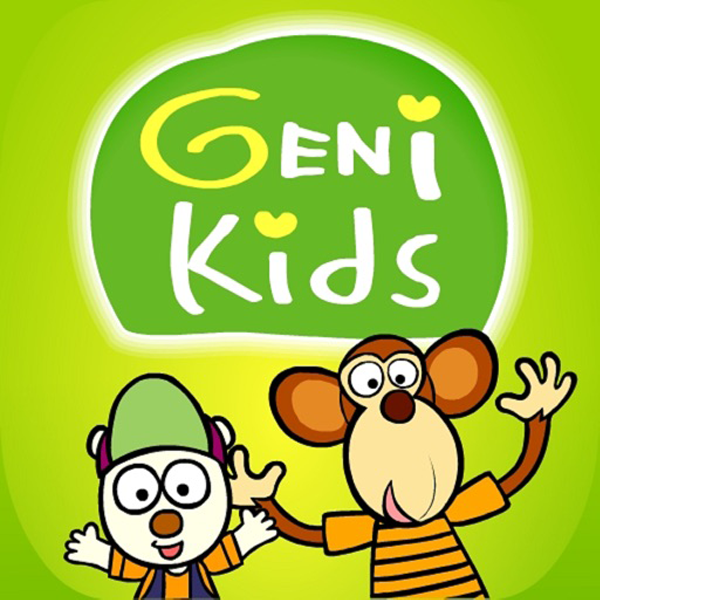

Z세대 중 컴퓨터와 가깝게 지낸 이들이라면 ‘지니키즈’나 ‘깨비키즈’와 같은 유아 교육 사이트를 잘 알 것이다. 실제로 주변 많은 아이들이 위 사이트를 통해 한글을 배우기도 했고, 한글 외에도 영어, 한자, 덧셈, 뺄셈 등 다양한 것을 즐겁고 재미있게 접할 수 있는 사이트로 이미 그 세대 부모님들 사이에서 정평이 난 상태였으니 말이다.
하지만 유튜브의 영향력이 커지고 증가함에 따라 부모님들은 보다 손쉽게 접할 수 있고, 무엇보다 무료로 아이들에게 보여줄 수 있는 유튜브 콘텐츠를 선택하기 시작했다. 실제로 요새 식당이나 공공장소에 가면 아이들에게 유튜브를 틀어주고 조용히 시키는 경우는 수도 없이 많다. 덕분에 아이들은 자연스럽게 유아 교육 사이트에서 멀어지고, 유아 교육 사이트는 쇠락을 길을 걷기 시작했다.
 유튜브는 개인이 영상을 제작해서 업로드 하는 방식이라 무척 다양한 콘텐츠를 접할 수 있는 창구가 된다. 때문에 원하는 것을 유튜브에서 쉽게 배울 수 있고 간접적으로 체험 또한 가능하다. 하지만 위 장점들은 정보를 구분하고 선별해서 수용할 수 있는 어른들에 한해 해당되는 이야기이다. 아이들은 아직 두뇌가 미성숙할뿐더러 자극적인 매체에 쉽게 중독될 수 있다. 유튜브에서도 이를 염려하여 여러 제한을 걸어둔 상태이지만, 요새 어른보다 it 기기 사용에 능통한 아이들이 많은 것이 현재 상황이다.
유튜브는 개인이 영상을 제작해서 업로드 하는 방식이라 무척 다양한 콘텐츠를 접할 수 있는 창구가 된다. 때문에 원하는 것을 유튜브에서 쉽게 배울 수 있고 간접적으로 체험 또한 가능하다. 하지만 위 장점들은 정보를 구분하고 선별해서 수용할 수 있는 어른들에 한해 해당되는 이야기이다. 아이들은 아직 두뇌가 미성숙할뿐더러 자극적인 매체에 쉽게 중독될 수 있다. 유튜브에서도 이를 염려하여 여러 제한을 걸어둔 상태이지만, 요새 어른보다 it 기기 사용에 능통한 아이들이 많은 것이 현재 상황이다.
때문에 외면 받던 유아 교육 사이트가 다시 활성화되어야 한다는 여론이 나오기 시작했는데, 처음엔 미미한 반응이었지만 이번 코로나로 인해 아이들이 유치원과 학교에 가지 못하면서 주목받고 각광받기 시작했다. 실제 네이버가 제작한 ‘웨일 스페이스’는 다양한 웹(web) 서비스들을 브라우저상에서 제공하고, 사용자는 웨일 계정 하나로 모든 서비스들을 편리하게 이용할 수 있도록 하였다. 이는 비대면 수업이 진행되는 현재 시점을 고려하여 언제든지 원격수업과 화상회의를 진행 할 수 있도록 하였으며, 최대 5000명까지 시간제한 없이 이용할 수 있도록 하였다. 김지철 교육감은 앞으로도 다양하고 유익한 교육용 플랫폼을 제공하여 미래사회에 대비한 충남 학교 만들기에 앞장 설 것이라고 강조한 것을 보면 앞으로 온라인 교육 시장이 얼마나 치열해질지는 물 보듯 훤하다.
덧붙여 이를 증명하듯 키즈 콘텐츠 시장은 빠르게 커지고 있는데, 코로나로 발생 이후 집콕 육아가 늘어나면서 키즈,교육용 장르의 일평균 이용량 증가율이 52.9%에 달한다고 한다. 이는 웹 동영상이나 게임보다 훨씬 높은 수치이다. 이는 코로나가 종식 된 이후에도 꺽이지 않을 것으로 전망되며, 토종 스타트업들이 부모의 양육 부담을 덜고 선생님 역할을 대신해주는 ‘비대면 키즈 콘텐츠’ 확대에 본격적으로 나섰다.
덕분에 기존 덧셈, 뺄셈, 한글, 영어 등 기본적인 것들에 국한 되어있던 콘텐츠들은 주식과 경제, 부동산등 아이들의 경제관념을 확립시키는 금융교육 콘텐츠를 개설했으며, 아이 맞춤형 교육 이외에도 잠시 동안 아이들을 돌봐줄 선생님을 찾는 사이트 역시 각광을 받고 있다고 한다.